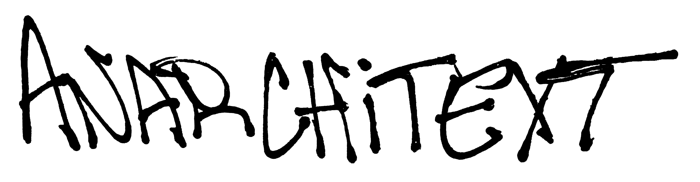
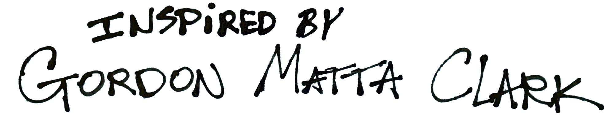
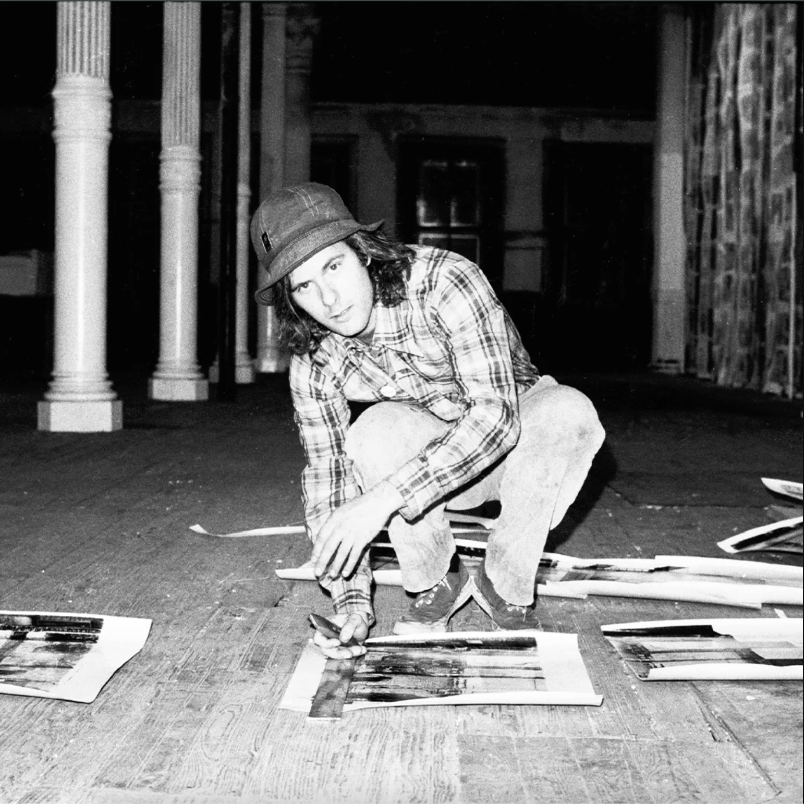
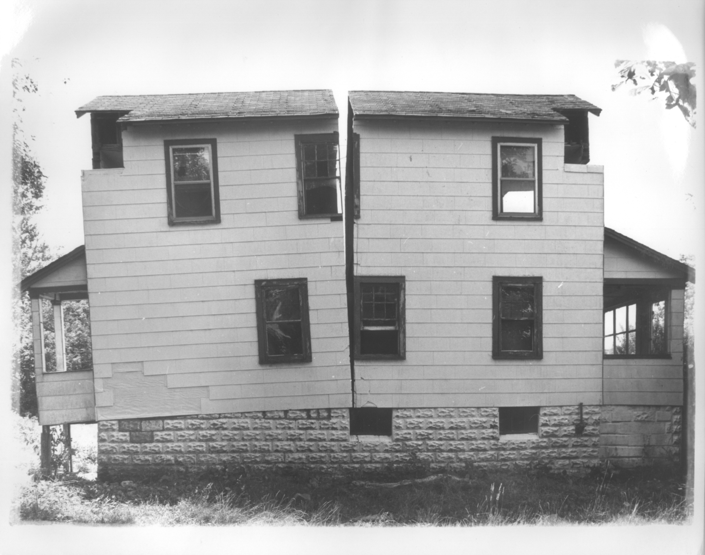

"PASSING THROUGH THE BOUNDARIES PASSING AWAY WITH A PIECE TO GO CHOOSING AND CLEARING OUT. A CRITICAL POINT IN STRESS AND WORKING BETWEEN FAILURE AND MINIMALISM REDUCTION AND COLLAPSE. KEEPING EYES OPEN FOR A NEW HIT THE JOY OF GETTING AWAY WITH IT A COMPLETE DEVOTION TO GETTING AWAY WITH IT. PASSING THROUGH MOVING IN AND GETTING AWAY WITH IT"
— Gordon Matta-Clark
'Passing through moving in
and getting away with it'
Anarchitext is an open archive of found text, handwritten marks, and uninvited inscriptions across New York City's five boroughs. The project takes its name from artist Gordon Matta-Clark's concept of Anarchitecture: not "not architecture," but something funnier and more corrosive: a practice that turns the built environment against itself, and allowed the discarded to be redefined. Where Anarchitecture cut through walls and floors to expose what structures prefer to hide, Anarchitext looks at what people write on them.
These found text instances, confined to their territory, build a reflective language in real time. Anarchitext places no consensus on style, hierarchy, or whether any of it matters. It wasn't art. It wasn't supposed to be. That is the point. Anarchitext is interested in that same compulsion — the necessity of the written word forcing itself into spaces designed to be read only one way.
Submit as you please

